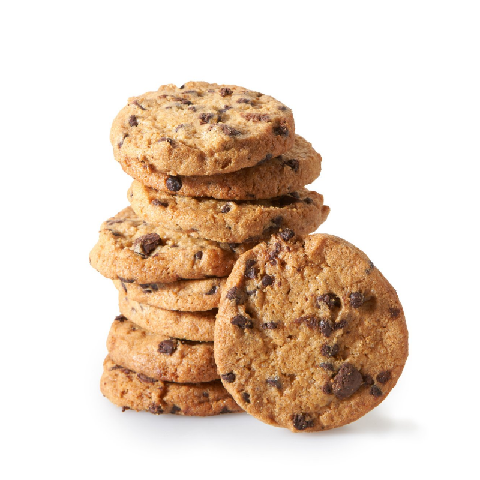

Cookies
This cookies will need
½ cup granulated sugar(100 g)
¾ cup brown sugar(165 g)
1 teaspoon salt
½ cup unsalted butter(115 g)
1 egg
1 teaspoon vanilla extract
1 ¼ cups all-purpose flour(155 g)
½ teaspoon baking soda
4 oz milk chocolate chunks(110 g)
4 oz dark chocolate chunk(110 g)

How to make them
- In a large bowl, whisk together the sugars, salt, and butter until a paste forms with no lumps.
- Whisk in the egg and vanilla, beating until light ribbons fall off the whisk and remain for a short
while before falling back into the mixture.
- Sift in the flour and baking soda, then fold the mixture with a spatula (Be careful not to overmix,
which would cause the gluten in the flour to toughen resulting in cakier cookies).
- Fold in the chocolate chunks, then chill the dough for at least 30 minutes. For a more intense
toffee-like flavor and deeper color, chill the dough overnight. The longer the dough rests, the more
complex its flavor will be.
- Preheat oven to 350°F (180°C). Line a baking sheet with parchment paper.
- Scoop the dough with an ice-cream scoop onto a parchment paper-lined baking sheet, leaving at least 4
inches (10 cm) of space between cookies and 2 inches (5 cm) of space from the edges of the pan so that the
cookies can spread evenly.
- Bake for 12-15 minutes, or until the edges have started to barely brown.
Bon Appétit!